← 대시보드로 돌아가기
토스 광고 상품 리서치 리포트
작성일: 2026-07-21 · 대상: 카카오톡 광고상품 PM · 리서치 렌즈: 비즈보드/소식칩/톡딜 확장을 위한 7대 신규 아젠다
이미지 사용 안내: 각 광고 상품 섹션 상단에 실제 UI 스크린샷·다이어그램을 첨부했습니다. 이미지 인덱스는 assets/MANIFEST.md 참고. 모든 이미지의 저작권은 원 저작자(비바리퍼블리카·토스, AMPM글로벌, 각 블로그 필자)에게 있으며, 본 자료는 사내 벤치마크 아이데이션 목적으로만 사용됩니다.
요약
- 발견된 토스 광고 상품(주요) 총 11개 (배너 기반 3, 리워드 기반 5, 라이브·커머스 2, 인프라형 1). 토스애즈 공식 소개 페이지의 상품 리스트로 확인됨 [출처: tossads.toss.im/category/intro].
- 카톡 아젠다 매핑 상위 3개
1. 송금 후 배너(디스플레이 광고) ↔ 아젠다 3(보이스톡·페이스톡 종료 광고), 아젠다 4(서비스 종료 광고) — 액션 완료 순간을 광고 트리거로 삼는 구조가 가장 직접적으로 이식 가능.
2. 머니알림(푸시형 리워드 광고) ↔ 아젠다 7(더보기 탭 새 포맷) 및 신규 시드(구독형 알림 지면).
3. 버튼 누르기 카탈로그(멀티 SKU 리워드)·두근두근 1등 찍기 ↔ 아젠다 4·5(톡딜/선물하기 종료 후 커머스 재유입, 소식칩 카탈로그 광고).
- 신규 시드 상위 3개
1. 결제 데이터 기반 초정밀 타겟팅을 카톡 지면에 도입(카카오페이 데이터 활용).
2. 아웃랜딩 리드폼(광고주 문의/가입 폼을 광고 유닛 안에서 사전 채움) — 톡딜/선물하기 종료 페이지에 적용.
3. 광고세트-소재 분리형 자동 최적화 구조(가로·정방·세로 소재를 하나의 세트로 통합) — 커스텀 비즈보드 아젠다 2와 직결.
- 주요 성과 벤치마크: 두근두근 1등 찍기 클릭률 약 5%(리워드 카탈로그, 광고 클릭 약 190만) [출처: tossads.toss.im/insights/catalog_vote], 개편된 디스플레이 광고 구조에서 CPC −42%, 잠재고객 캠페인 CPA −46% [출처: tossads.toss.im/insights/product-information], 결제 데이터 타겟팅 적용 후 영상 시청률 105.7%, ROAS 1,173%(한국야쿠르트) [출처: tossads.toss.im 인사이트].
광고 상품 프로파일
1) 디스플레이 광고 – 송금 후 화면(포스트-액션 배너)
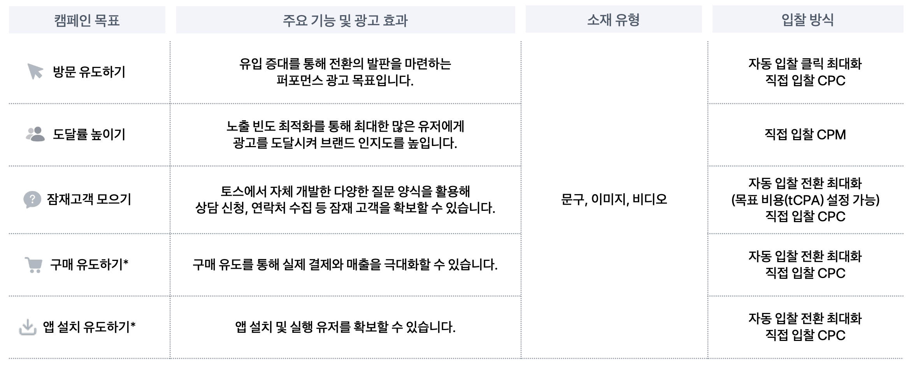
↑ 토스 디스플레이 광고 상품 페이지의 배너 상품 대표 이미지. 모먼트 배너 4종 지면. 출처: tossads.toss.im/category/banner
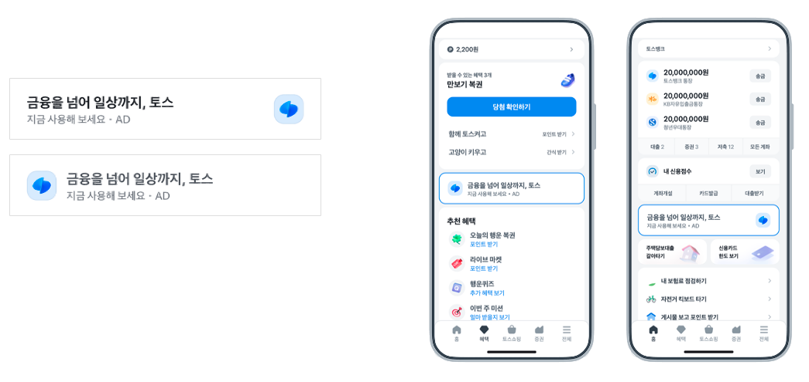
↑ 배너 광고 지면 예시(송금 완료 후 화면 배너 포함). 출처: tossads.toss.im/category/banner
- 지면 / 트리거: "송금이 완료된 이후" 화면, "함께 토스 켜기" 화면 등 토스 앱 내 핵심 액션 완료 직후 노출. 지면 선택 불가, 각 영역에 균등 분배 [출처: tossads.toss.im/category/banner, inside.ampm.co.kr/item/113].
- 크리에이티브 스펙(저공수 여부): 2025~2026 개편 이후 한 광고세트 안에서 가로형·정방형·세로형 이미지 + 세로/가로 영상까지 모두 등록 가능. 소재 재활용성 매우 높음 → 저공수 O [출처: tossads.toss.im/insights/product-information, tossads.toss.im 개편 안내].
- 클릭 후 인터랙션: 광고주 외부 랜딩 또는 토스 내부 랜딩 페이지(캠페인 상세) 이동. 광고주 자체 웹뷰가 가능해 "인앱 미니 랜딩" 성격을 가짐 [출처: tossads.toss.im/category/banner].
- 넛지 요소: 액션 완료(송금·인증·리워드 수령) 직후의 성취감 순간을 이용해 자연스러운 노출 → 심리적 방어가 낮음. 별도 카운트다운 없음.
- 타겟팅 / 과금 / 광고주 진입장벽: 결제 데이터(카드 등록 9,700만 건, 누적 송금액 740조 원) 기반 데모·소비업종·관심사·소비수준·광고반응 타겟팅. CPC·CPM 자동/수동 입찰. 최소 집행 100만 원 수준(리워드) / 배너는 예산 자유 [출처: tossads.toss.im, item.ampm.co.kr/view/16/item].
- 대표 사례와 성과 수치: 개편 후 트래픽 캠페인 CPC −42%, 잠재고객 캠페인 CPA −46% 성과 개선. 케이뱅크·메리츠화재·현대해상 등 금융 브랜드 다수 집행 [출처: tossads.toss.im/insights/product-information].
- 소스 신뢰도: 공식.
- 카톡 아젠다 매핑: 아젠다 3(보이스·페이스톡 종료 광고), 아젠다 4(선물하기/톡딜 서비스 종료 광고).
- 카톡 적용 시사점: 카톡의 통화 종료 화면, 톡딜 결제·주문 완료 화면, 선물하기 결제 완료 화면에 "액션 후 배너"를 성과형(CPC 자동 입찰) 인벤토리로 신설. 지면 자체는 카톡 UX가 이미 존재하는 완료화면이므로 개발 부담이 낮음.
2) 디스플레이 광고 – 배너 광고 개편(광고세트-소재 분리)
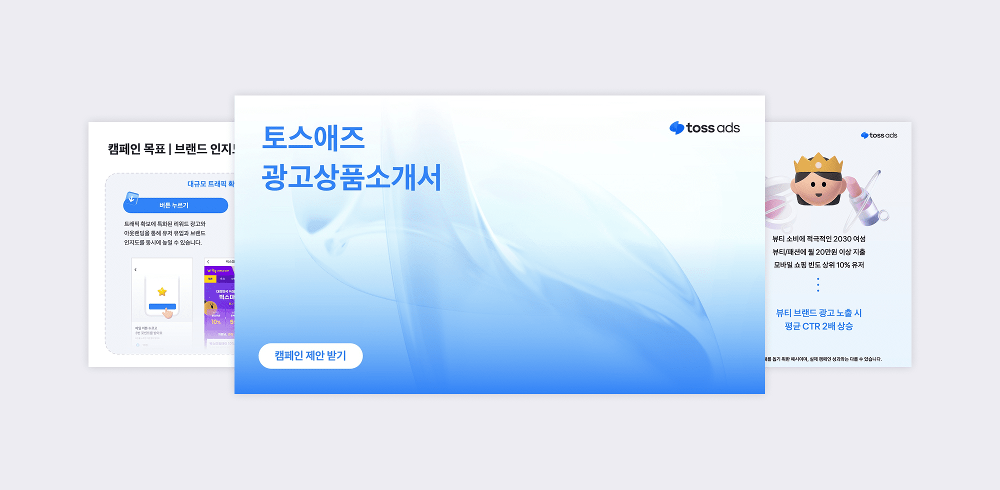
↑ 2026 광고상품 소개서 표지 – 광고세트/소재 분리 구조. 출처: tossads.toss.im/insights/product-information
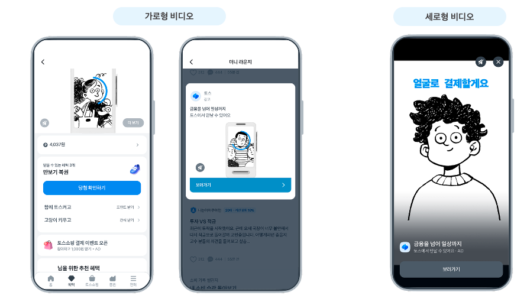
↑ 인앱 랜딩(하프뷰) 소재 예시 — 광고 탭 후 화면 하단에서 반투명 카드가 올라오는 형태. 출처: tossads.toss.im/category/banner
구조 개요 (광고세트 → 소재 자동 매칭)
flowchart LR
A[광고주 등록 자산]
A --> B1[문구 카피]
A --> B2[이미지 3규격
가로·정방·세로]
A --> B3[영상 2규격
가로·세로]
B1 & B2 & B3 --> C[하나의 광고세트]
C --> D{시스템 자동 매칭}
D --> E1[모먼트 배너]
D --> E2[혜택 탭 배너]
D --> E3[페이지 배너]
D --> E4[리스트·보드 배너]
- 지면 / 트리거: 토스 앱 내 모먼트 배너, 혜택탭 배너, 페이지 배너, 리스트 배너, 보드 배너 등 (구조 개편으로 지면 8종 이상을 하나로 통합) [출처: tossads.toss.im/category/intro].
- 크리에이티브 스펙(저공수): 문구·이미지 3규격(가로/정방/세로)·영상 2규격(가로/세로)을 하나의 광고세트에 등록. 시스템이 지면·유저 상황에 맞게 자동 선택. 템플릿·오토크리에이티브에 최적화된 구조 [출처: tossads.toss.im 개편 안내].
- 클릭 후 인터랙션: 광고주 랜딩 or 인앱 랜딩(하프뷰 형태 사례 다수 관찰).
- 넛지 요소: 결제 데이터 기반 개인화 카피, 리타겟팅 시나리오 결합 사례 존재.
- 타겟팅/과금/진입장벽: 자동 입찰(광고세트 단위 예산·타겟·목표 설정), 목표별(트래픽/잠재고객/전환) 최적화. 최소 집행 낮음.
- 대표 사례와 성과: 코카콜라 브랜드 커스텀 이벤트 + 디스플레이 리타겟팅 결합 시 이벤트 참여 전환율 42%, 10대 결제율 9.6배(광고 미노출 대비), 배너 클릭 유저 중 프로모션 참여 비중 86.6% [출처: tossads.toss.im 인사이트]. 크몽 CPA 62% 절감, 팔도감 신규 고객 획득비용 47% 절감 사례 명시 [출처: tossads.toss.im].
- 소스 신뢰도: 공식.
- 카톡 아젠다 매핑: 아젠다 2(커스텀 비즈보드) — 다이나믹 사이즈 전환의 백엔드 구조.
- 카톡 적용 시사점: 비즈보드의 스케일·포지션 전환을 위해선 크리에이티브 유형(비율)을 소재 단위에 분리하고 지면 상황에 따라 시스템이 자동 매칭하는 구조 필요. 토스가 2026년에 실증한 "한 세트-여러 비율" 모델이 참고 가능.
3) 디스플레이 광고 – 함께 토스 켜기 풀페이지 배너
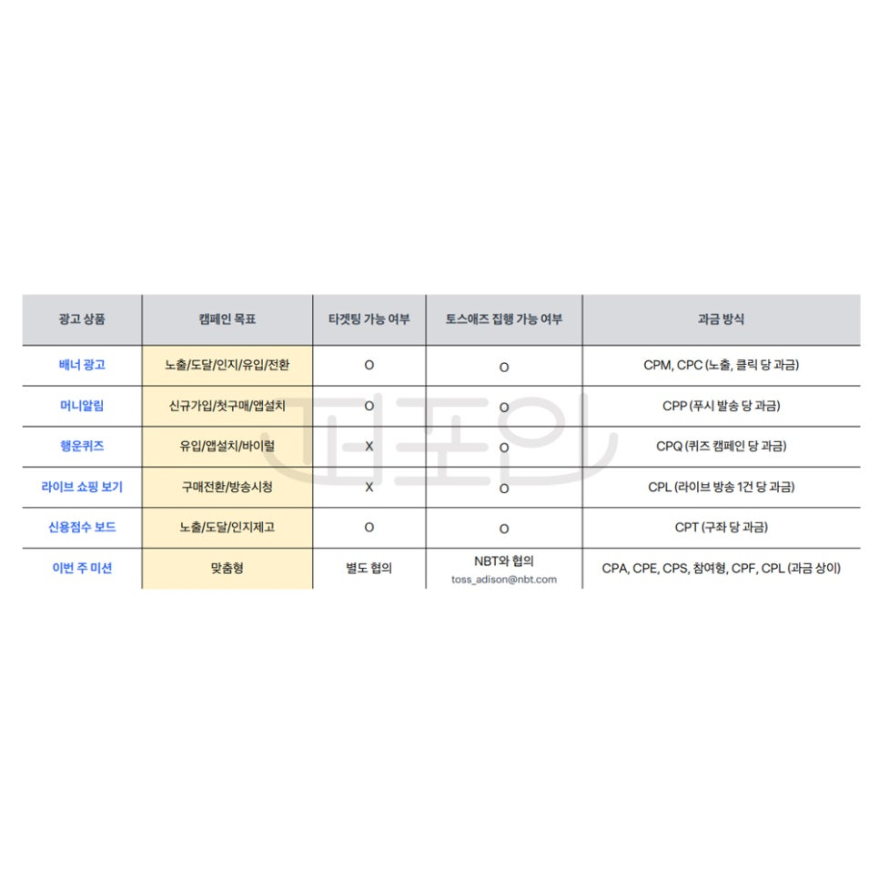
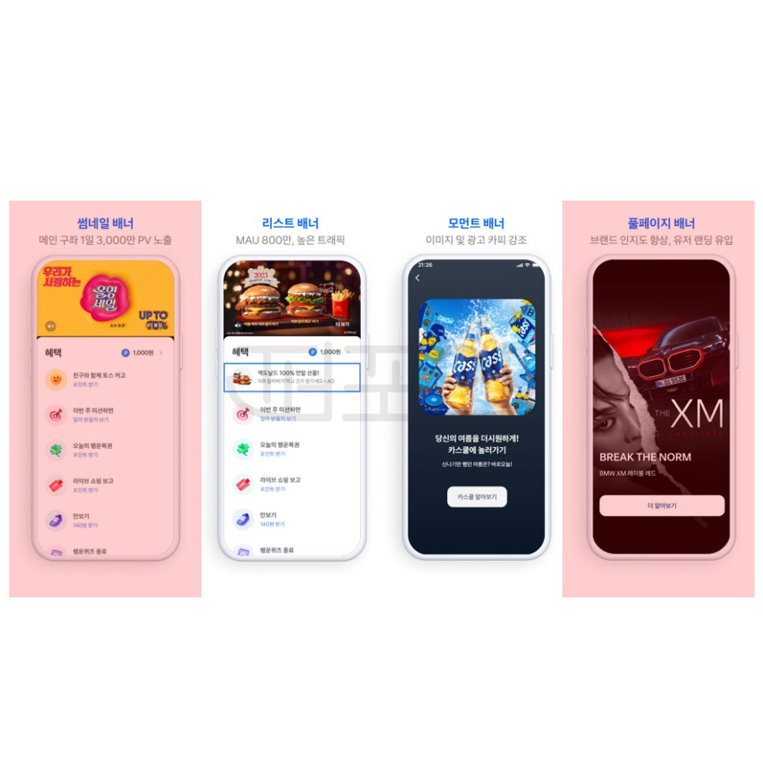
↑ 「함께 토스 켜기」 미션 실행 시 노출되는 풀페이지 배너 광고. 좌: 지면 예시, 우: 광고주 크리에이티브 노출 예시. 출처: perfoin 네이버 블로그
- 지면 / 트리거: 사용자가 "함께 토스 켜기"(블루투스로 주변 유저와 매칭해 포인트 적립) 기능을 실행하는 시점에 풀페이지로 광고가 노출됨 [출처: blog.naver.com/perfoin/223404500347, brunch.co.kr/@eyesofjs/30].
- 크리에이티브 스펙: 풀페이지 브랜딩 크리에이티브(1:1 또는 세로형 대형 이미지). 저공수 아님(전용 소재 필요).
- 클릭 후 인터랙션: 광고주 랜딩. 사용자는 이미 리워드 획득 흐름에 진입한 상태라 방어감이 낮음.
- 넛지 요소: 리워드 획득 대기 시간을 활용한 몰입형 노출. 미묘한 소셜 프루프(내 주변 사람도 토스를 켰다).
- 타겟팅/과금: 배너 광고와 동일한 결제 데이터 타겟팅.
- 대표 사례: 브랜딩 광고(가독성 강조) 위주.
- 소스 신뢰도: 2차(대행사·블로그).
- 카톡 아젠다 매핑: 신규 시드(카톡 내 리텐션형 미니 서비스에 광고 삽입).
- 카톡 적용 시사점: 카톡 내 리텐션형 소셜 미니 서비스(예: 오픈채팅 접속 대기, 그룹 초대 대기)에 풀뷰 브랜딩 광고 삽입. 단, 카톡의 UX 방어선(풀스크린 광고 지양)을 고려하면 부분 차용만 가능.
4) 리워드 광고 – 두근두근 1등 찍기(카탈로그 투표형)
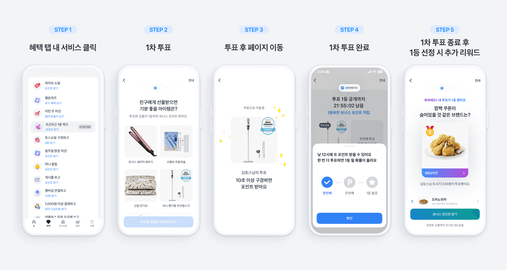
↑ 두근두근 1등 찍기 상품 대표 UI — 6~10개 SKU 카탈로그 투표 화면. 출처: tossads.toss.im/insights/catalog_vote
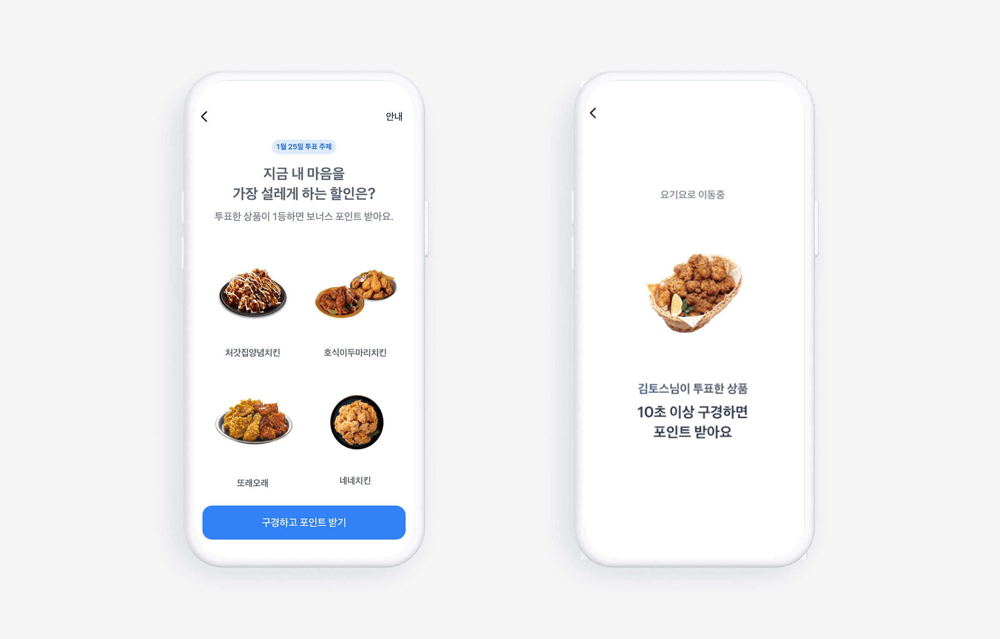
↑ 두근두근 1등 찍기 게이미피케이션 메커니즘(1등 예측 시 추가 리워드). 출처: tossads.toss.im/insights/catalog_vote
- 지면 / 트리거: 토스 앱 혜택 탭 내 리워드 지면. 하루 최대 2번 사용자가 6~10개 제품 중 1개를 "커스텀 질문"에 투표. 클릭 시 즉시 리워드, 투표한 제품이 1등이 되면 추가 리워드 [출처: tossads.toss.im/insights/catalog_vote].
- 크리에이티브 스펙(저공수): 6~10개 SKU × 이미지+상품 정보(카탈로그 자동 조립 가능). 저공수 O(상품 피드가 있으면 오토크리에이티브 가능).
- 클릭 후 인터랙션: 광고주 랜딩(할인 쿠폰·상세 페이지). 서비스 진입 후 앱 오픈 전환율 상승 사례 확인.
- 넛지 요소: (i) 리워드 지급 (ii) 순위 미스터리(1등이 되면 추가 리워드) → 소셜 프루프+게이미피케이션+즉시 보상 3중 넛지.
- 타겟팅/과금: CPC 기반, 낮은 클릭 단가로 대량 트래픽 확보. 결제 데이터·데모 타겟팅. 리워드 광고 카테고리 최소 집행 1,000,000원 [출처: item.ampm.co.kr/view/16/item].
- 대표 사례와 성과: 광고 클릭 190만, 클릭률 약 5%(카탈로그 노출 5개월간). 배달 앱 사례에서 DAU 16% 증가, 앱 오픈 전환율 상승 [출처: tossads.toss.im/insights/catalog_vote].
- 소스 신뢰도: 공식 + 광고주 사례 인용.
- 카톡 아젠다 매핑: 아젠다 4(서비스 종료 광고 — 톡딜/선물하기 이탈 유저 재유입), 아젠다 7(더보기 탭 새 포맷).
- 카톡 적용 시사점: 톡딜 상세 종료 시점 또는 소식칩·더보기 탭에 카탈로그 투표 광고 신설. 리워드 대신 톡 이모티콘/기프티콘 조각·초코 등 카카오 자체 리워드 화폐로 대체 가능. 상품 피드만 있으면 저공수 대량 캠페인 가능.
5) 리워드 광고 – 머니알림(푸시형 인앱 알림)
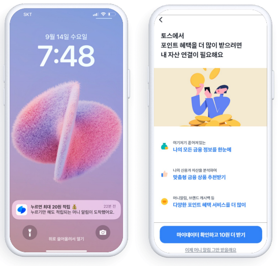
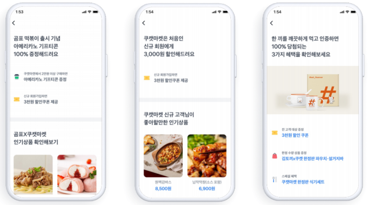
↑ 좌: 잠금화면에 노출되는 머니알림 푸시. 우: 인앱 알림 리스트(10원 리워드 적립). 출처: onliveplus 네이버 블로그
- 지면 / 트리거: 머니알림을 구독한 유저 대상 앱 푸시. 클릭 시 광고주 이벤트 페이지로 이동, 사용자는 10원 포인트 획득 [출처: blog.naver.com/onliveplus/223498489306, blog.naver.com/propark1020/222335175626, lever.me/resource/blog/1981].
- 크리에이티브 스펙: 짧은 텍스트 카피 + 아이콘. 매우 저공수.
- 클릭 후 인터랙션: 광고주 랜딩(웹뷰). 리워드는 알림 오픈 시점 자동 지급.
- 넛지 요소: 리워드(현금성 포인트) 강한 개인화 카피 가능(결제 데이터 기반).
- 타겟팅/과금: 결제 데이터 기반 정교한 타겟팅. CPC 및 오픈당 과금.
- 대표 사례와 성과: 알림 오픈율 30~50%로 관찰 (Lever.me 리서치: "약 30% 내외" [출처: lever.me/resource/blog/1981], propark 마케팅 블로그: "50% 이상" [출처: blog.naver.com/propark1020/222335175626]. 두 소스에서 수치 편차가 있어 30~50% 범위로 표기).
- 소스 신뢰도: 2차(대행사) + 3차 확인. 정확 수치는 관찰·추정.
- 카톡 아젠다 매핑: 신규 시드(카톡 알림 광고 지면 개설). 아젠다 5(수익 쉐어 광고)와도 결합 가능(크리에이터의 알림 채널 광고화).
- 카톡 적용 시사점: 카톡의 채널 알림을 광고 지면화 하는 것은 이미 카카오톡 채널 메시지 광고가 존재. 단, 토스식 "리워드 지급 옵션"이 없다는 점이 차별점. 카톡의 이모티콘·톡DP 등 인앱 화폐를 리워드로 결합 시 오픈율 상승 여지. 단, 카톡은 UX상 리워드 광고 과잉 우려가 있으므로 부분 차용(예: 브랜드 알림톡 프리미엄 옵션).
6) 리워드 광고 – 행운퀴즈(퀴즈 참여형)
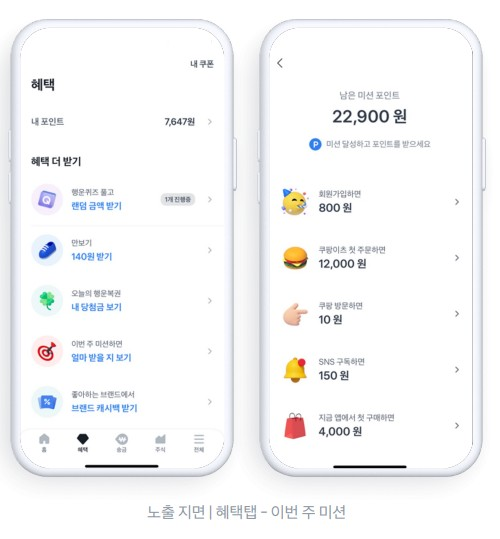
↑ AMPM 광고상품 페이지의 토스 리워드 광고 라인업 소개(행운퀴즈·머니알림·버튼누르기 컴포짓). 행운퀴즈 단독 스크린샷은 공개 소스에서 확보하지 못해 종합 이미지로 대체 표시. 출처: item.ampm.co.kr/view/16/item
- 지면 / 트리거: 혜택 탭 내 행운퀴즈. 사용자는 힌트를 보고 정답을 맞히면 리워드 획득. 힌트·정답 페이지에 광고주 콘텐츠 노출 [출처: tossads.toss.im/].
- 크리에이티브 스펙(저공수): 힌트 카피 + 정답 카피 + 이미지 몇 장 → 저공수 O.
- 클릭 후 인터랙션: 정답 이후 광고주 랜딩으로 트래픽 집중. 광고 클릭률·전환률 모두 리워드가 강력한 인센티브로 작용.
- 넛지 요소: 참여형(퀴즈), 즉시 보상, 신비화(정답을 알아야 리워드).
- 타겟팅/과금: CPC/CPA, 결제 데이터 타겟팅.
- 대표 사례: 팔도감 신규 고객 획득 비용 47% 절감, 한화생명 시나리오 설계로 신규 고객 확보 [출처: tossads.toss.im 인사이트].
- 소스 신뢰도: 공식.
- 카톡 아젠다 매핑: 신규 시드(카톡 정보 탭 또는 오픈채팅 룸 내 퀴즈 광고).
- 카톡 적용 시사점: 카톡 오픈채팅 정보 탭 또는 소식칩에 정답 맞히기형 리워드 광고. 다만 "과도한 게이미피케이션"이 out-of-scope로 명시되었으므로, 광고주 사이드 학습만 활용하는 것을 권장(수량·빈도를 극도로 제한).
7) 리워드 광고 – 이번 주 미션 / 주말 버튼 누르기
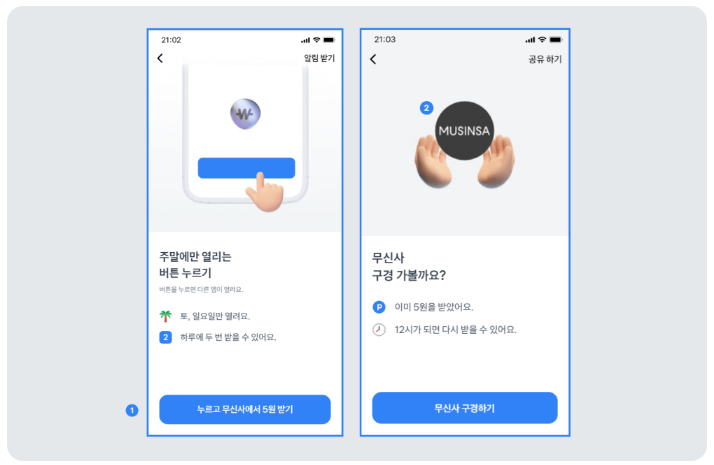
↑ 좌: 주말 버튼 누르기 상품 대표 이미지. 우: 혜택 탭 노출 UI 스크린샷. 출처: highfriends0210 네이버 블로그
- 지면 / 트리거: 특정 요일에만 활성화되는 리워드 미션 지면. 사용자는 미션을 완료하고 광고주 콘텐츠에 노출 [출처: tossads.toss.im/category/intro, blog.naver.com/highfriends0210/223453625706].
- 크리에이티브 스펙: 텍스트 + 단순 이미지. 저공수.
- 클릭 후 인터랙션: 광고주 이벤트 페이지.
- 넛지 요소: 시간 제한(주말 한정), 미션 완료 성취감.
- 타겟팅/과금: CPC 기반. 2024년 3월 단가 변경 사례 존재(공식 공지) [출처: toss.oopy.io/72d1e5e7-...].
- 대표 사례: 대행사 블로그가 케이스별로 제시(수치 비공개).
- 소스 신뢰도: 공식(단가) + 2차(운영 기록).
- 카톡 아젠다 매핑: 신규 시드(요일별·기간 한정 광고 지면 개설).
- 카톡 적용 시사점: 톡딜의 요일별 딜과 광고 인벤토리를 결합해, 주말 한정 광고 슬롯 신설 가능.
8) 리워드 광고 – 버튼 누르기(단일 SKU) / 버튼 누르기 카탈로그(멀티 SKU)
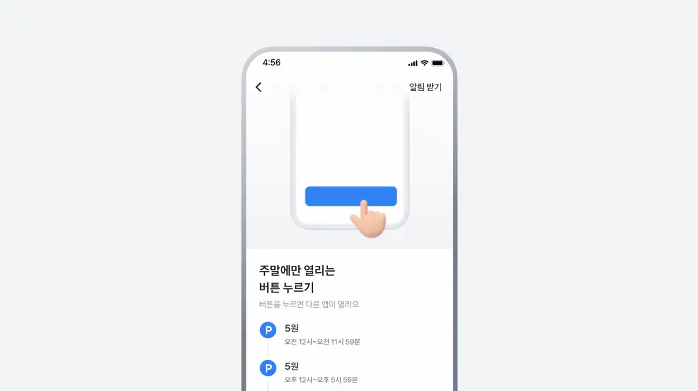
↑ 토스애즈 홈페이지의 버튼 누르기 상품 애니메이션(단일 SKU → 카탈로그 SKU 확장). 카탈로그(멀티 SKU) UI는 04번(두근두근 1등 찍기)와 상당 부분 중첩. 출처: tossads.toss.im/
- 지면 / 트리거: 혜택 탭 내 개별 광고 지면. 사용자가 "버튼 누르기" 액션(단일 클릭)만으로 리워드 획득. 2025년 카탈로그형 확장 → 3개 상품 동시 노출, 타임딜 형식 지원 [출처: tossads.toss.im/insights/product-information].
- 크리에이티브 스펙(저공수): 상품 이미지 + 문구. 매우 저공수.
- 클릭 후 인터랙션: 광고주 랜딩. 리드폼과 연계 시 아웃랜딩 리드 수집 가능.
- 넛지 요소: 즉시 보상, 타임딜(카탈로그 버전).
- 타겟팅/과금: CPC 200원 최소 입찰(오픈 프로모션 시 100원부터), 광고비 자동 계산 [출처: onmd.net/brandcontents/?idx=69731061, lilys.ai/ko/notes/213397].
- 대표 사례와 성과: 카탈로그 버튼 누르기 도입 후 커머스 광고주 ROAS 1,400~1,800% 관찰 [출처: tossads.toss.im/insights/product-information].
- 소스 신뢰도: 공식.
- 카톡 아젠다 매핑: 아젠다 4(톡딜 종료 후 커머스 광고), 아젠다 1(비즈보드 보장형 확장)의 커머스 특화 버전.
- 카톡 적용 시사점: 톡딜 상세 종료 화면 또는 소식칩에 "타임딜 카탈로그 배너" 삽입. 톡딜 이미 존재하는 상품 피드를 활용 시 오토크리에이티브 가능.
9) 라이브 마켓(라이브 커머스 광고)
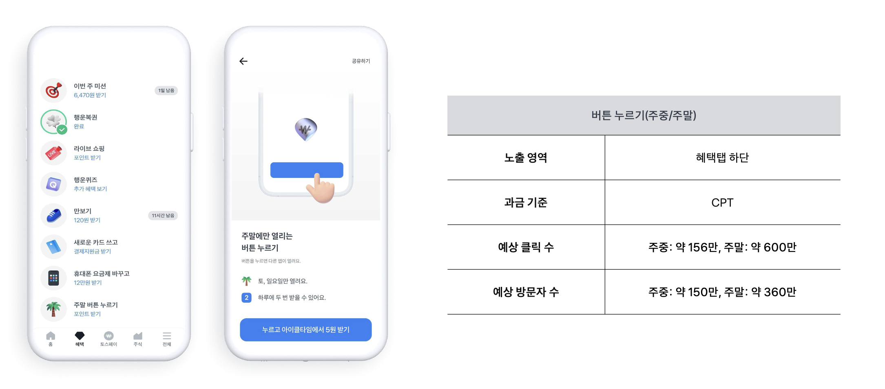
↑ 라이브 마켓 방송 지면 대표 이미지(60분 타임딜). 출처: tossads.toss.im/category/live-market
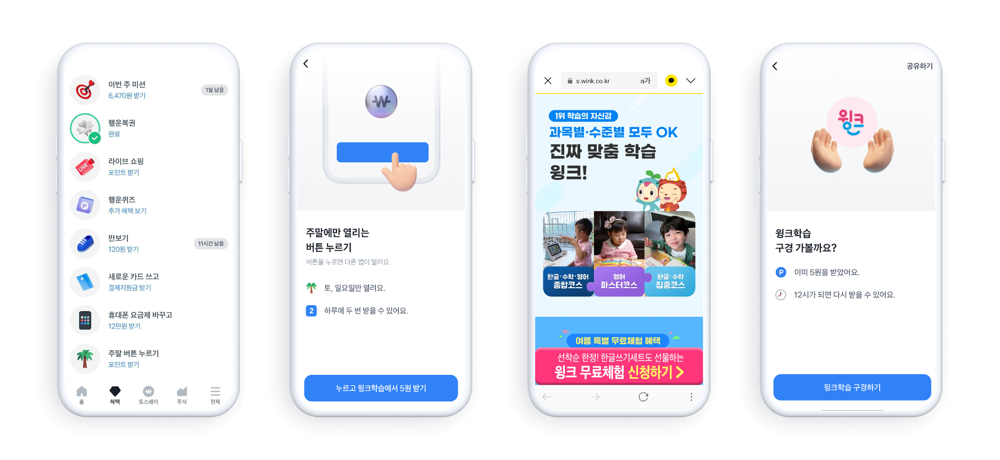
↑ 라이브 커머스 UI 세부(진행자·상품·구매 CTA 구성). 출처: tossads.toss.im/category/live-market
- 지면 / 트리거: 토스 앱 내 라이브 커머스 방송. 광고주는 60분 타임딜 형식으로 방송 진행. 리워드와 결합해 시청자 확보 [출처: tossads.toss.im/].
- 크리에이티브 스펙: 60분 라이브 영상 + 프로모션 상품 → 고공수.
- 클릭 후 인터랙션: 라이브 시청 → 상품 상세 페이지.
- 넛지 요소: 60분 타임딜, 실시간 재고 알림.
- 타겟팅/과금: 인벤토리 제한 없이 동시간대 다수 광고주 부킹 가능(경쟁사 대비 강점) [출처: tossads.toss.im 라이브 커머스 인사이트].
- 대표 사례와 성과: 25.09~26.02 6개월간 누적 GMV 596억 원(8개 매체 중 1위, 라방바랩 데이터), 방송 1회당 평균 방문자 21만 명 [출처: tossads.toss.im].
- 소스 신뢰도: 공식(라방바랩 3자 데이터 인용).
- 카톡 아젠다 매핑: 신규 시드(카톡 쇼핑 라이브와 유사한 지면 확장). 카톡 상품 기획 시 라이브 광고 확장 검토.
- 카톡 적용 시사점: 카톡 쇼핑탭 또는 톡딜에 60분 타임딜 라이브 슬롯을 광고화. 다만 이는 out-of-scope("풀스크린 비디오")와 겹치므로, 카톡 앱 밖 링크 유도 형태만 검토.
10) 앱인토스(Apps in Toss) – 미니앱 광고 인프라 / 크리에이터 수익 쉐어
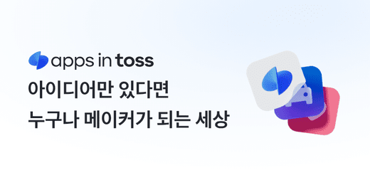
↑ 앱인토스 공식 소개 OG 이미지 – 미니앱 생태계 슬로건. 출처: toss.im/apps-in-toss
↑ 앱인토스 파트너 미니앱 사례(버블프린트샵) — 무설치 인앱 실행 UX. 출처: toss.im/apps-in-toss
크리에이터 수익 쉐어 구조 (카톡 아젠다 5 매핑)
flowchart TB
C[크리에이터·개발자
미니앱·숏폼]
P[pCTR 예측 모델]
A[광고주 소재풀]
U[유저]
C -->|콘텐츠 등록| P
A -->|캠페인 등록| P
P -->|자동 매칭| U
U -->|클릭·전환| R[수익 발생]
R -->|수익 쉐어| C
R -->|성과 리포트| A
- 지면 / 트리거: 토스 앱 안에 외부 서비스가 미니앱(앱-인-앱) 형태로 탑재. 개발자·기업이 자신의 앱을 무설치로 노출 [출처: toss.im/apps-in-toss, developers-apps-in-toss.toss.im/intro/overview.html].
- 크리에이티브 스펙: React 기반 Granite 프레임워크로 개발. 저공수(1인 개발자·바이브코더 평균 5일 출시) [출처: toss.im/apps-in-toss].
- 클릭 후 인터랙션: 인앱 미니앱 실행(설치 없음). 미니앱 내부에서 광고 노출로 수익 창출 가능 [출처: iks-room.tistory.com, hwada.tistory.com, min-inter.co.kr/wiki/].
- 넛지 요소: 3,000만 유저 도달(공식), 스마트 발송(AI 기반 개인화 푸시)로 유저 재방문 유도 [출처: developers-apps-in-toss.toss.im/smart-message/intro.html].
- 타겟팅/과금: 인앱 광고는 CPC/CPM. 개발자에게 광고 수익 쉐어 지급.
- 대표 사례: 개인 개발자가 하루 1,000원 광고 수익 창출(외부 후기) [출처: iks-room.tistory.com].
- 소스 신뢰도: 공식(플랫폼 자체) + 2차(개발자 후기).
- 카톡 아젠다 매핑: 아젠다 5(수익 쉐어 광고 – 지금탭 숏폼 크리에이터 수익화).
- 카톡 적용 시사점: 카톡 이미 미니앱/카카오톡채널 유사 인프라가 있음. 크리에이터 수익 쉐어 모델을 앱인토스의 스마트 발송 로직처럼 pCTR 기반 자동 최적화로 도입 가능. 지금탭 숏폼 크리에이터에게 광고 매칭 최적화 시스템 필요.
11) 프로젝트 토스 X(성과형 광고 상품, 2026 신규 티저)
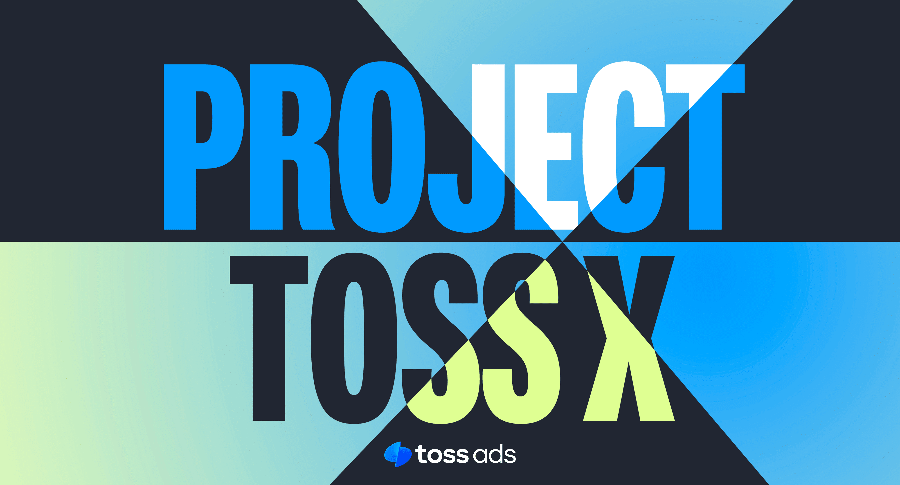
↑ Project Toss X 웨비나 티저(Pioneer Club 초기 파트너 대상 성과형 광고 소개). 출처: tossads.toss.im/insights/product-information
- 지면 / 트리거: 2026년 공개된 성과형 광고 상품. 기존 배너의 한계를 해결한다는 티저 [출처: tossads.toss.im/insights/product-information].
- 크리에이티브 스펙: 광고세트-소재 분리형 자동 최적화 구조 계승. 상세 스펙 미공개.
- 넛지 요소: 초기 파트너 프로그램 "Pioneer Club" 진행.
- 소스 신뢰도: 공식(단, 상세 미공개 → 관찰·추정).
- 카톡 아젠다 매핑: 아젠다 1(비즈보드 보장형 고도화). 성과형·자동입찰 모델의 벤치마크.
- 카톡 적용 시사점: 카톡의 "보장형" → "성과형" 하이브리드 전환 방향의 참고 사례. 특히 광고세트·소재 분리 구조와 머신러닝 최적화 인프라 참고.
(부록) 참고: 토스 상표 "숏폼 광고" 출원 및 카카오와의 리워드 광고 분쟁
- 2025년 10월 토스가 "숏폼 광고" 관련 상표를 출원한 사실이 보도됨 [출처: news.nate.com/view/20251024n28564, fmkorea.com/9087738335]. 지금탭 숏폼에 광고 상품이 추가될 것으로 관측됨(관찰·추정).
- 동 보도에서 "카카오톡이 자사 앱에서 공유된 토스 리워드 광고 노출을 방해했다"는 토스 측 주장 존재. 카톡 PM 입장에서는 카톡 알림톡·오픈채팅에 유입되는 외부 리워드 광고의 게이트웨이 정책 정비 필요성으로 해석 가능.
카톡 아젠다별 벤치마크 매핑
한눈 요약 — 카톡 7대 아젠다와 토스 대응 상품
flowchart LR
subgraph 카톡 아젠다
K1[1. 비즈보드 보장형
영상 3초→장초]
K2[2. 커스텀 비즈보드
동적 배너]
K3[3. 통화 종료 광고]
K4[4. 서비스 종료 광고
선물하기·톡딜]
K5[5. 수익 쉐어
지금탭 숏폼]
K6[6. 오픈채팅
플로팅 배너]
K7[7. 더보기 탭
새 포맷]
end
subgraph 토스 벤치마크
T1[디스플레이 개편
세트-소재 분리]
T2[송금 후 배너]
T3[두근두근 1등 찍기]
T4[카탈로그 버튼 누르기]
T5[앱인토스
스마트 발송]
T6[함께 토스 켜기
풀페이지]
T7[혜택 탭 리워드 5종]
end
K1 --> T1
K2 --> T1
K3 --> T2
K4 --> T2
K4 --> T3
K4 --> T4
K5 --> T5
K6 --> T6
K7 --> T3
K7 --> T7
아젠다 1 — 비즈보드 보장형 고도화(3초→장초 영상)
- 토스 벤치마크: 디스플레이 광고 개편(광고세트-소재 분리, 3~5초 이상 세로·가로 영상 통합), Project Toss X 성과형 확장.
- 핵심 학습: 하나의 광고세트 안에 여러 비율 영상+이미지를 등록하면 예산·학습 데이터가 집중되어 머신러닝 최적화가 잘 작동. 개편 후 CPC −42%.
- 적용 아이디어: 비즈보드 보장형에 6~15초 세로형/정방형 영상을 필수 소재로 추가하고, 카카오모먼트 자동 배포 로직으로 카톡 내 세컨더리 지면(소식칩·오픈채팅 정보 등)까지 자동 확산.
아젠다 2 — 커스텀 비즈보드(동적 스케일·포지션 전환)
- 토스 벤치마크: 광고세트-소재 분리 구조, 지면별 자동 매칭.
- 핵심 학습: 소재를 지면 규격에 묶지 말고 원본 자산(문구+3규격 이미지+2규격 영상)만 등록하도록 UX 재편.
- 적용 아이디어: 비즈보드 소재를 "가로 3:1(기존)·정방형·세로 4:5"로 등록하고, 카톡 상단·중단·풀뷰 등 지면에 자동 리사이즈 배포. 광고주 크리에이티브 재활용률 극대화.
아젠다 3 — 보이스톡·페이스톡 종료 광고
- 토스 벤치마크: 송금 후 화면 배너(액션 후 광고 트리거).
- 핵심 학습: 액션 완료 직후는 사용자의 방어감이 낮고 성취감이 높아 광고 수용도가 올라감. 결제 데이터로 정교한 타겟팅 결합 시 CPA −46% 사례 확인.
- 적용 아이디어: 통화 종료 화면에 디스플레이 배너 + 하프뷰 랜딩 조합. 통화 상대와의 관계(친구/그룹) 데이터를 프라이버시 보호 하에 광고 컨텍스트로 활용(예: 그룹 대화 후 소셜 커머스 광고).
아젠다 4 — 서비스 종료 광고(선물하기/톡딜 이탈)
- 토스 벤치마크: 송금 후 배너 + 두근두근 1등 찍기(카탈로그 리워드) + 카탈로그 버튼 누르기.
- 핵심 학습: 이탈 순간에 다양한 SKU를 카탈로그 형태로 노출하는 것이 단일 상품 노출보다 도달·전환 모두 우수(6~10개 상품 표시 시 클릭률 5%).
- 적용 아이디어: 톡딜/선물하기 종료 시점에 카톡 초코·이모티콘 리워드가 붙는 미니 카탈로그 광고 삽입. 광고주 진입 장벽 낮게 상품 피드만으로 자동 생성.
아젠다 5 — 수익 쉐어 광고(지금탭 숏폼 크리에이터)
- 토스 벤치마크: 앱인토스(Apps in Toss)의 스마트 발송·수익 쉐어 모델, 앱인토스 개발자 후기(하루 1,000원 광고 수익).
- 핵심 학습: 크리에이터/개발자 개별 성과를 pCTR로 예측해 광고 매칭을 자동 최적화. 크리에이터가 광고 지면을 직접 운영할 필요 없음.
- 적용 아이디어: 지금탭 숏폼 창작자에게 자동 광고 매칭+수익 쉐어 정책을 제공(광고 소재 선택·거절권 포함). 크리에이터가 만든 콘텐츠에 어울리는 광고를 시스템이 자동 매칭.
아젠다 6 — 오픈채팅 입력필드 위 플로팅/띠배너(어필리에이트)
- 토스 벤치마크: 함께 토스 켜기 풀페이지 배너(리텐션형 미니 서비스에 광고 삽입) + 앱인토스 미니앱 인프라.
- 핵심 학습: 리텐션형 서비스 안에서 광고를 "인터랙션 대기 시간"에 삽입하면 방어감 낮음. 다만 카톡의 채팅 UX는 방어벽이 매우 높기 때문에 띠배너보다 미니앱 형태의 링크 카드가 안전.
- 적용 아이디어: 오픈채팅 입력필드 위에 접혀있는 링크 카드(어필리에이트 상품 3개 카탈로그) — 사용자가 명시적으로 확장할 때만 노출. 카탈로그 형식(두근두근 벤치마크).
아젠다 7 — 더보기 탭 새 광고 포맷
- 토스 벤치마크: 혜택 탭(리워드 광고 5종 집중). 리워드 광고 클릭 PV 2,300만/일 [출처: tossads.toss.im 상품소개서 인용, adure.net PDF].
- 핵심 학습: 더보기/혜택 탭은 사용자가 능동적으로 진입하는 지면이라 리워드형·참여형 광고에 최적. 2:1 정적 배너를 대체할 수 있음.
- 적용 아이디어: 더보기 탭에 주간 미션(주말 버튼 누르기 벤치마크) 또는 카탈로그 투표(두근두근 벤치마크) 광고 도입. 카카오 톡DP·이모티콘 리워드와 결합.
신규 시드 (아젠다 밖에서 발굴)
- 결제 데이터 기반 초정밀 타겟팅 API — 토스가 "카드 등록 9,700만 건, 누적 송금액 740조 원"의 퍼스트파티 데이터로 광고 효율을 강조. 카카오는 카카오페이·톡딜 결제 데이터를 통합해 유사한 API를 광고주에게 제공할 수 있음 [출처: tossads.toss.im].
- 아웃랜딩 리드폼(자동 유저 정보 입력) — 토스는 유저 정보가 자동 입력되는 리드 수집 광고를 운영(2025 하반기 픽셀 설치로 아웃랜딩 전환 추적 예정). 카카오는 카톡 계정 정보 자동 입력 리드폼을 비즈보드 CTA에 도입 가능 [출처: adure.net PDF Q3 2025].
- 광고 이벤트 마커 + 웹훅 — 토스애즈는 캠페인 액션·성과 변화의 연결고리를 대시보드에 마커로 표시하고, 리드 수집 후 광고주 시스템에 웹훅 발송. 카카오모먼트 대시보드에 이식 시 광고주 만족도 상승 [출처: tossads.toss.im 상품소개서].
- 카탈로그 자동 생성(오토크리에이티브) — 상품 피드만 등록하면 카탈로그 카드/투표/버튼 누르기 등 여러 포맷으로 자동 생성. 광고주 제작 부담 최소화. 저공수 제작 축의 핵심.
- 광고세트-소재 분리형 캠페인 구조 — 지면·규격 조합에 매몰되지 않고, 원본 소재만 등록하면 시스템이 지면별 자동 매칭. 카카오모먼트가 채택 가능한 IA 개편 방향 [출처: tossads.toss.im 개편 안내].
임팩트 스코어링 표
| 상품 (토스) |
광고주 수요 |
인벤토리 |
UX 저항 낮음 |
디자인 임팩트(×2) |
총점 |
| 송금 후 화면 배너 → 통화·톡딜 종료 광고 (아젠다 3·4) |
5 |
5 |
4 |
4×2=8 |
22 |
| 두근두근 1등 찍기(카탈로그 투표) → 톡딜/더보기 (아젠다 4·7) |
5 |
4 |
3 |
5×2=10 |
22 |
| 광고세트-소재 분리 구조 → 커스텀 비즈보드 (아젠다 2) |
5 |
5 |
5 |
3×2=6 |
21 |
| 카탈로그 버튼 누르기(타임딜) → 톡딜 재유입 (아젠다 4) |
5 |
4 |
4 |
3×2=6 |
19 |
| 앱인토스 스마트 발송 → 크리에이터 수익 쉐어 (아젠다 5) |
4 |
3 |
4 |
4×2=8 |
19 |
| 결제 데이터 타겟팅 API (신규 시드) |
5 |
4 |
4 |
2×2=4 |
17 |
| 머니알림(푸시 리워드) → 알림톡 유료 강화 (아젠다 7) |
4 |
4 |
2 |
3×2=6 |
16 |
| 행운퀴즈(퀴즈 참여) → 오픈채팅 정보 지면 |
3 |
3 |
3 |
4×2=8 |
17 |
| 함께 토스 켜기 풀페이지 → 리텐션형 미니 지면 (아젠다 6) |
3 |
2 |
2 |
4×2=8 |
15 |
| 라이브 마켓 → 톡딜 라이브 (신규 시드) |
4 |
3 |
2 |
3×2=6 |
15 |
| Project Toss X 성과형 (아젠다 1) |
4 |
3 |
3 |
2×2=4 |
14 |
스코어링 기준: 각 항목 1(낮음)~5(높음). 디자인 임팩트는 카톡의 브랜드·비주얼 차별화 관점.
추천 우선순위 TOP 3
1. 송금 후 배너 → 통화 종료·톡딜/선물하기 종료 배너(아젠다 3·4): 인벤토리·수요·저항 모두 균형이 좋고, 개발 부담이 낮음.
2. 두근두근 1등 찍기 → 톡딜/더보기 카탈로그 투표(아젠다 4·7): 디자인 임팩트가 가장 큼(게이미피케이션은 최소로 제한).
3. 광고세트-소재 분리 구조 → 커스텀 비즈보드 백엔드(아젠다 2): 카톡 광고 인프라 전반의 확장성을 열어주는 구조 개편. 광고주 제작 부담 대폭 완화.
소스 목록
모든 URL은 2026-07-21 접근 기준.
공식 (토스애즈·앱인토스)
- https://tossads.toss.im/ — 토스애즈 메인, 광고 상품 라인업·성과 데이터
- https://tossads.toss.im/category/intro — 광고 상품 안내(라인업)
- https://tossads.toss.im/category/banner — 디스플레이 광고(배너) 상세
- https://tossads.toss.im/insights/product-information — 광고 상품 소개서 및 개편·성과 데이터
- https://tossads.toss.im/insights/catalog_vote — 두근두근 1등 찍기 상세
- https://tossads.toss.im/insights/targeting-creative-report — 소재·타겟팅 리포트
- https://tossads.toss.im/insights/ctr — CTR 개념 및 벤치마크
- https://toss.im/apps-in-toss — 앱인토스 소개
- https://toss.im/apps-in-toss/blog — 앱인토스 파트너 블로그
- https://developers-apps-in-toss.toss.im/intro/overview.html — 앱인토스 개발자센터
- https://developers-apps-in-toss.toss.im/smart-message/intro.html — 스마트 발송(pCTR 기반 자동 발송)
- https://ads-platform.toss.im/ — 토스 광고 센터(광고주 대시보드)
- https://toss.oopy.io/72d1e5e7-65f7-4761-9c0e-ec3717ca18e8 — 버튼 누르기 단가 변경 공지(2024.03)
- https://toss.oopy.io/302714bb-fde7-8186-af77-ce984b000ec8 — 머니알림 광고 세팅 가이드
- https://www.adure.net/uploads/adure/1756437508_Toss_Ads_Product_Information_2025_Q3_0811.pdf — 토스애즈 광고상품소개서 2025 Q3 (PDF)
대행사·미디어렙 2차
- https://inside.ampm.co.kr/insight/13113 — AMPM 토스 광고 매체 소개
- https://inside.ampm.co.kr/insight/59015 — 토스 광고 세팅 실전 가이드
- https://inside.ampm.co.kr/item/113 — 토스 배너광고 상품 페이지
- https://item.ampm.co.kr/view/16/item — 토스 리워드광고 상품 페이지
- https://item.ampm.co.kr/view/16/compare — 토스 리워드광고 상품 비교
- https://inside.ampm.co.kr/download/insight/8819/[토스애즈]광고상품소개서_2024_Q4.pdf — 토스애즈 소개서 2024 Q4 (PDF)
- https://www.lever.me/resource/blog/1981 — Lever 「퍼포먼스 마케터들이 토스 광고를 하는 진짜 이유」
- https://blog.naver.com/lever_xpert_official/224016477971 — Lever 네이버 블로그
- https://www.ads-soon.com/product/details/50 — 애즈순 머니알림 소개
- https://www.ads-soon.com/product/details/121 — 애즈순 숏폼 광고 소개
개인 블로그·후기(2차/3차, 관찰·추정 확인용)
- https://blog.naver.com/PostView.naver?blogId=propark1020&logNo=222335175626 — 머니알림 오픈율 관찰
- https://blog.naver.com/onliveplus/223498489306 — 머니알림 광고 개요
- https://blog.naver.com/perfoin/223404500347 — 함께 토스 켜기 풀페이지 배너
- https://blog.naver.com/PostView.naver?blogId=highfriends0210&logNo=223453625706 — 주말 버튼 누르기 광고
- https://blog.naver.com/PostView.naver?blogId=ssa_group&logNo=223820597025 — 토스 CPC 광고 매커니즘
- https://winwin-avengers.com/토스의-cpc-광고-방식과-매커니즘-쉽게-정리하기/ — 상생어벤져스 CPC 정리
- https://m.blog.naver.com/poro300/223455630444 — 토스 광고 실사용 ROAS 3,000% 후기
- https://m.blog.naver.com/luyilu/223514932507 — 1만 원 토스 광고 후기
- https://hybum.tistory.com/entry/토스애즈TOSS-ads-광고상품-안내-2025 — 토스애즈 2025 가이드
- https://feeris.tistory.com/entry/토스-배너광고-1분-요약 — 토스 배너 광고 요약
- https://hwada.tistory.com/entry/앱인토스로-토스-미니앱-만들기-후기-비개발자-검수-통과-팁 — 앱인토스 개발 후기
- https://iks-room.tistory.com/entry/앱인토스-앱-출시-후기-팁-하루-1000원-광고-수익을-만들기까지 — 앱인토스 하루 1,000원 수익 후기
- https://min-inter.co.kr/wiki/apps-in-toss-guide-development-revenue-operations/ — 앱인토스 개발·수익 위키
- https://goddaehee.tistory.com/416 — 앱인토스 소개
- https://brunch.co.kr/@eyesofjs/30 — 함께 토스 켜기 UX 분석
- https://brunch.co.kr/@soodolnam/181 — 토스 앱 푸시 알림 전략
언론 보도
- https://news.nate.com/view/20251024n28564 — 「[단독] 카카오 숏폼 논란 속 토스도 뛰어든다」, 2025.10.24
- https://www.fmkorea.com/9087738335 — 동일 기사 커뮤니티 스크랩
리소스
- https://grant-documents.thevc.kr/273977_[소개서]2025년토스오픈이노베이션앱인토스서비스소개서.pdf — 앱인토스 서비스 소개서 (PDF, 2025)
본 리포트에서 수치는 아래 원칙으로 다뤄졌음.
- 토스 공식 페이지에 명시된 수치: 그대로 인용.
- 대행사/블로그에서 확인된 수치가 하나뿐인 경우: 「관찰·추정」으로 표기.
- 두 소스에서 수치 편차가 있는 경우(예: 머니알림 오픈율 30%~50%): 범위로 표기하고 두 출처 병기.
- 토스 상품 라인업의 전체 지도(모먼트 배너·혜택탭 배너·라이브 쇼핑 보기·프리미엄 보드·머니알림·행운퀴즈·이번 주 미션·주말 버튼 누르기)는 tossads.toss.im/category/intro에서 확인 가능하며, 본 리포트에서 상세 다루지 않은 「프리미엄 보드」 등 일부 상품은 공개 자료가 제한적이어서 심층 프로파일에서 제외했음.